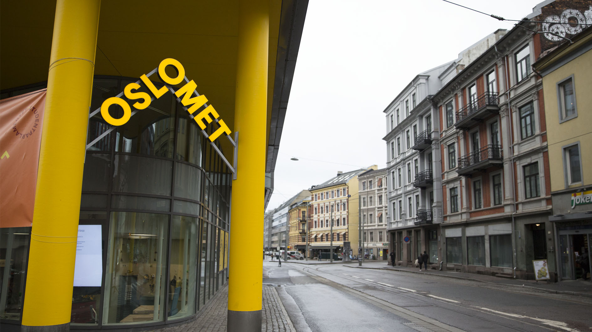

Welcome to Pilestredet 35
Welcome to the heart of OsloMet's urban campus located at Pilestredet 35. Here you'll find vibrant student life, modern facilities, and a gateway to innovation and learning.

Exploring the Vibrant Heart of OsloMet
Step into a world where education meets innovation at OsloMet's central hub, Pilestredet 35. As you navigate through this portal, you'll discover not just the pulsating beat of student life but also the inspiring spaces where tomorrow's leaders forge their paths. From our state-of-the-art facilities to our inclusive community, every aspect of our campus is designed with your academic journey in mind. Dive deeper into what makes OsloMet a crucible of learning and opportunity.